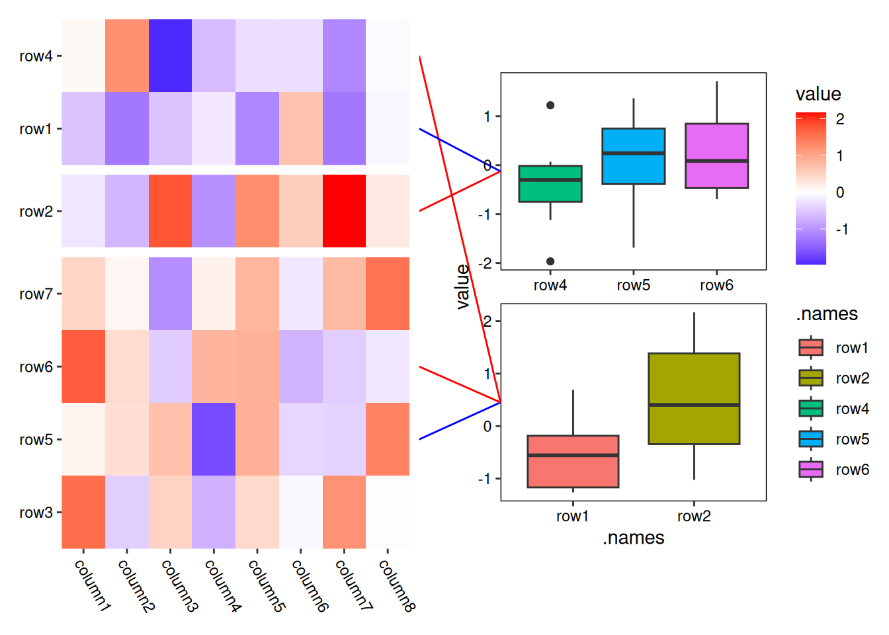
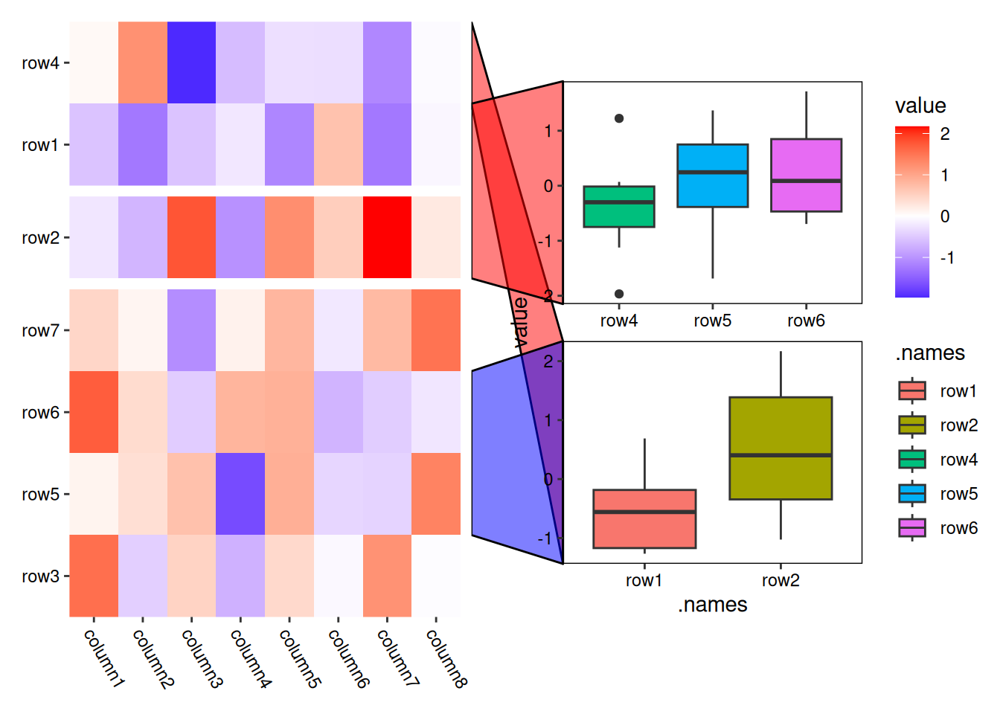
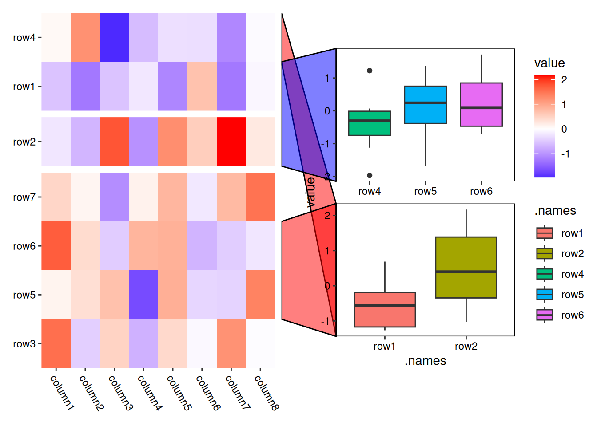
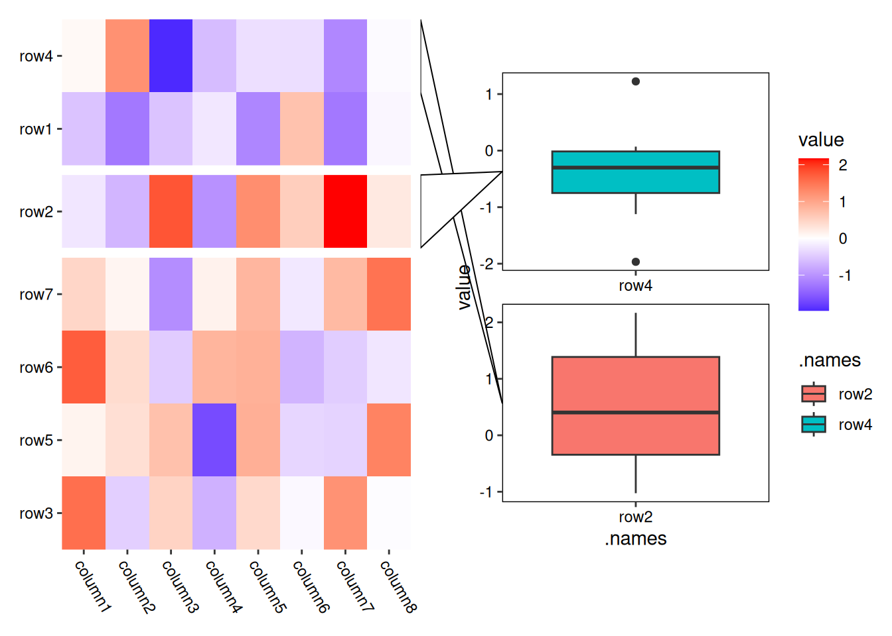
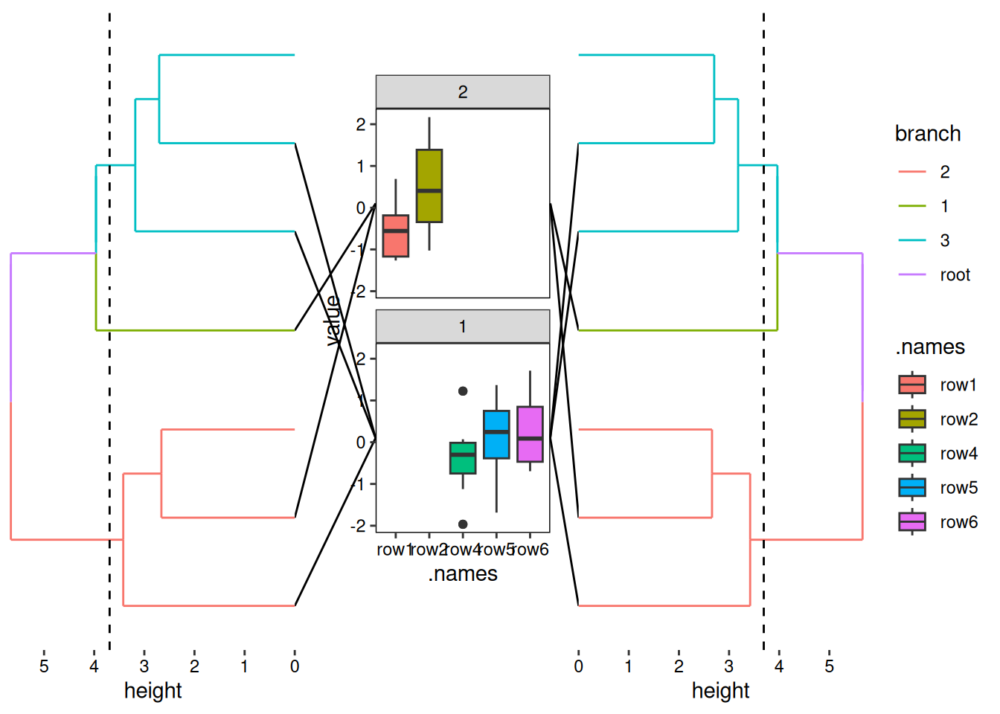

library(ggalign)#> Loading required package: ggplot2#> #> Attaching package: 'ggalign'#> The following object is masked from 'package:ggplot2':#> #> element_polygonset.seed(123)small_mat <-matrix(rnorm(56), nrow =7)rownames(small_mat) <-paste0("row", seq_len(nrow(small_mat)))colnames(small_mat) <-paste0("column", seq_len(ncol(small_mat)))
To add an annotation plot for specific observations, we must first know how to select the observations to be linked.
10.1 Links
The pair_links() function is used to define pairs of connected observations. In the formula, the left side (before the ~) represents hand1—the observations on the left (for a horizontal stack layout) or top (for a vertical stack layout). The right side (after the ~) represents hand2—the observations on the right (for horizontal stack) or bottom (for vertical stack).
These defined pairs will either be linked together, or each group in the pair will be linked separately within the same plot area.
Both sides of the formula can be specified using integer or character indices of the original data (before reordering).
pair_links(1:2~c("c", "d"), c("a", "b") ~3:4)#> <ggalign_pair_links>#> A total of 2 pairs of link groups#> #> hand1 ~ hand2 #> 1: 1:2 ~ c("c", "d")#> 2: c("a", "b") ~ 3:4 #> #> A total of 4 link groups
The print method showed various informations:
The object class and the number of paired groups.
The specific groups in each pair.
The total number of groups (rather than the number of paired groups). For example, in this case, there are 4 groups in total since each pair consists of 2 groups.
If only the left-hand side of the formula exists, you can input it directly.
pair_links(1:2, c("a", "b"))#> <ggalign_pair_links>#> A total of 2 pairs of link groups#> #> hand1 ~ hand2#> 1: 1:2 ~ #> 2: c("a", "b") ~ #> #> A total of 2 link groups
To specify links in the right only, you must use formula:
pair_links(~1:2, ~c("a", "b"))#> <ggalign_pair_links>#> A total of 2 pairs of link groups#> #> hand1 ~ hand2 #> 1: ~ 1:2 #> 2: ~ c("a", "b")#> #> A total of 2 link groups
For integer indices, wrap them with I() to follow ordering from the layout.
pair_links(I(1:2))#> <ggalign_pair_links>#> A total of 1 pair of link groups#> #> hand1 ~ hand2#> 1: I(1:2) ~ #> #> A total of 1 link group
You can wrap the whole formula.
pair_links(I(1:2~3:4))#> <ggalign_pair_links>#> A total of 1 pair of link groups#> #> hand1 ~ hand2 #> 1: I(1:2) ~ I(3:4)#> #> A total of 2 link groups
range_link() function can be used to define a range of observations, which accepts two argument that specify the lower and upper bounds of the range. These bounds should be defined as a single integer or character.
pair_links(range_link(1, "a"))#> <ggalign_pair_links>#> A total of 1 pair of link groups#> #> hand1 ~ hand2#> 1: range_link(1, "a") ~ #> #> A total of 1 link group
In this case, the left-hand is defined as the range between the 1st observation and the observation named "a".
You can also use waiver() to inherit values from the opposite group.
pair_links(range_link(1, "a") ~waiver())#> <ggalign_pair_links>#> A total of 1 pair of link groups#> #> hand1 ~ hand2 #> 1: range_link(1, "a") ~ waiver()#> #> A total of 2 link groups
1
inherit values from the left hand
pair_links(waiver() ~range_link(1, "a"))#> <ggalign_pair_links>#> A total of 1 pair of link groups#> #> hand1 ~ hand2 #> 1: waiver() ~ range_link(1, "a")#> #> A total of 2 link groups
1
inherit values from the right hand
You can combine any of these into a list.
pair_links(list(range_link(1, "a"), waiver()) ~list(4:5, c("b", "c")))#> <ggalign_pair_links>#> A total of 1 pair of link groups#> #> hand1 ~ hand2 #> 1: list(range_link(1, "a"), waiver()) ~ list(4:5, c("b", "c"))#> #> A total of 2 link groups
In this example, the left side combines the range between the 1st observation and “a” with the observations 4 and 5, and the observations “b” and “c”.
10.2ggmark()
ggmark() can be used to add annotation plot for the selected observations. ggmark accepts mark argument, which should be a mark_draw() object to define how to draw the links. Currently, two internal functions mark_line(), mark_tetragon() can be used to quickly draw line and quadrilateral links used to connect the selected observations and the plot panel.
By default, when no manual observations were selected, ggmark() will select all observations and split them based on the groups defined in the layout.
The data underlying the ggplot object generated by ggmark() is similar to that of ggalign() (Section 9.1), but it differs in that it does not include the .x, .y, and .discrete_x/.discrete_y columns. Instead, a special column named .hand is added, which is a factor with levels c("left", "right") for horizontal stack layouts or c("top", "bottom") for vertical stack layouts. This column indicates the position of the linked observations.
Note: Only data for selected observations are retained.
You can adjust the link size by using the plot.margin argument.
set.seed(123)ggheatmap(small_mat) +theme(axis.text.x =element_text(hjust =0, angle =-60)) +anno_right() +align_kmeans(3L) +ggmark(mark_line()) +geom_boxplot(aes(.names, value)) +theme(plot.margin =margin(l =0.1, t =0.1, unit ="npc"))#> → heatmap built with `geom_tile()`
set.seed(123)ggheatmap(small_mat) +theme(axis.text.x =element_text(hjust =0, angle =-60)) +anno_right() +align_kmeans(3L) +ggmark(mark_tetragon()) +geom_boxplot(aes(.names, value)) +theme(plot.margin =margin(l =0.1, t =0.1, unit ="npc"))#> → heatmap built with `geom_tile()`
If you manually provide the linked observations, you can use the group1 and group2 arguments to control whether the layout panel groups and their ordering should be used to create the annotations.
set.seed(123)ggheatmap(small_mat) +theme(axis.text.x =element_text(hjust =0, angle =-60)) +anno_right() +align_kmeans(3L) +ggmark(mark_tetragon(1:3), group1 =TRUE) +geom_boxplot(aes(.names, value)) +theme(plot.margin =margin(l =0.1, t =0.1, unit ="npc"))#> → heatmap built with `geom_tile()`

By default, ggmark() uses facet_wrap to define the facet, and you can use it to control the facet apearance (just ignore the facets argument). We prefer facet_wrap() here because it offers flexibility in positioning the strip on any side of the panel, and typically, we only want to a single dimension to create the annotate the selected observations. However, you can still use facet_grid() to create a two-dimensional plot. Note that for horizontal stack layouts, the row facets, or for vertical stack layouts, the column facets will always be overwritten.
set.seed(123)ggheatmap(small_mat) +theme(axis.text.x =element_text(hjust =0, angle =-60)) +anno_right() +align_kmeans(3L) +ggmark(mark_line()) +geom_boxplot(aes(.names, value, fill = .names)) +facet_wrap(vars(), scales ="free", strip.position ="right") +theme(plot.margin =margin(l =0.1, t =0.1, unit ="npc"))#> → heatmap built with `geom_tile()`

You can further customize the appearance of link lines and quadrilaterals using the element argument in mark_line()/mark_tetragon() function:
Link lines can be customized using the element_line().
Link ranges can be customized using the element_polygon().
By default, vectorized fields in element_line() and element_polygon() will be recycled to match the total number of groups.
set.seed(123)ggheatmap(small_mat) +theme(axis.text.x =element_text(hjust =0, angle =-60)) +anno_right() +align_kmeans(3L) +ggmark(mark_line(4:6, 1:2, .element =element_line(color =c("red", "blue")) ) ) +geom_boxplot(aes(.names, value, fill = .names)) +facet_wrap(vars(), scales ="free", strip.position ="right") +theme(plot.margin =margin(l =0.1, t =0.1, unit ="npc"))#> → heatmap built with `geom_tile()`
set.seed(123)ggheatmap(small_mat) +theme(axis.text.x =element_text(hjust =0, angle =-60)) +anno_right() +align_kmeans(3L) +ggmark(mark_tetragon(4:6, 1:2, .element =element_polygon(fill =c("red", "blue"), alpha =0.5) ) ) +geom_boxplot(aes(.names, value, fill = .names)) +facet_wrap(vars(), scales ="free", strip.position ="right") +theme(plot.margin =margin(l =0.1, t =0.1, unit ="npc"))#> → heatmap built with `geom_tile()`

You can wrap the element with I() to recycle it to match the drawing groups. The drawing groups typically correspond to the number of observations for element_line(), as each observation will be linked with the plot panel.
set.seed(123)ggheatmap(small_mat) +theme(axis.text.x =element_text(hjust =0, angle =-60)) +anno_right() +align_kmeans(3L) +ggmark(mark_line(4:6, 1:2, .element =I(element_line(color =c("red", "blue"))) ) ) +geom_boxplot(aes(.names, value, fill = .names)) +facet_wrap(vars(), scales ="free", strip.position ="right") +theme(plot.margin =margin(l =0.1, t =0.1, unit ="npc"))#> → heatmap built with `geom_tile()`

For element_polygon(), the drawing groups usually align with the defined groups. However, if the defined group of observations is separated and cannot be linked with a single quadrilateral, the number of drawing groups will be larger than the number of defined groups.
set.seed(123)ggheatmap(small_mat) +theme(axis.text.x =element_text(hjust =0, angle =-60)) +anno_right() +align_kmeans(3L) +ggmark(mark_tetragon(4:6, 1:2, .element =I(element_polygon(fill =c("red", "blue"), alpha =0.5)) ) ) +geom_boxplot(aes(.names, value, fill = .names)) +facet_wrap(vars(), scales ="free", strip.position ="right") +theme(plot.margin =margin(l =0.1, t =0.1, unit ="npc"))#> → heatmap built with `geom_tile()`
For stack_layout(), we usually don’t need to specify the observations for hand2, since it should match hand1. This is because all plots in stack_discrete() should maintain the same ordering index. However, specifying hand2 becomes useful in stack_cross(), where different orderings are involved.
stack_discreteh(small_mat) +align_dendro(aes(color = branch), k =3L) +scale_x_reverse(expand =expansion()) +theme(plot.margin =margin()) +ggmark(mark_line(4:6~waiver(), 1:2~waiver())) +geom_boxplot(aes(.names, value, fill = .names)) +theme(plot.margin =margin(l =0.1, t =0.1, r =0.1, b =0.1, unit ="npc")) +align_dendro(aes(color = branch), k =3L) +scale_x_continuous(expand =expansion()) +theme(plot.margin =margin())

Now, let’s move on to the next chapter, where we will introduce quad_layout() in full. While we’ve already introduced ggheatmap()—a specialized version of quad_layout()—most of the operations discussed in Chapter 6 can also be applied to quad_layout(). In the next section, we’ll delve into quad_layout() and explore its full functionality.